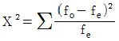
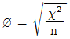
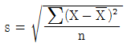
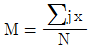
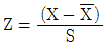
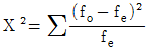
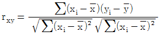
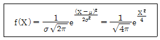
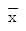
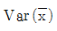

사회조사분석사-2급 (2000-09-20 기출문제)
1과목: 조사방법론 I
1. 학교성적을 연구하려 할 때 인종간의 차이가 성적의 분산에 영향을 끼친다고 하면 동일 종족의 학생만 선정해서 연구하는 외부변수 통제방법은?
- 난선화
- 외부변수의 실험변수화
- 외부변수의 고정
- 매칭절차
(정답률: 19%)

2. 실험에 있어 중요하다고 인정되는 변수를 기준및 통제집단 구성을 동등화한 것은 어느 것인가?
- 무작위추출에 의한 통제방법
- 빈도분포통제
- 정밀통제
- 실험통제
(정답률: 알수없음)
3. 다음은 면접과 관찰과의 관계를 설명한 것이다. 옳지 않은 것은 어느 것인가?
- 면접은 언어를 매체로 하여 가능하다.
- 면접과 관찰은 상호배타적이다.
- 자료수집의 한 방법이다.
- 자연과학에선 주로 관찰이 사용되고 사회과학에선 면접이 사용된다.
(정답률: 알수없음)
4. 실험실 실험의 목적으로 잘못 지적된 것은?
- 순수한 상황에서 변수간의 관계를 밝히고자 한다.
- 1차적으로 다른 연구결과에서 비롯된 명제와 예측에 대한 겁증을 시도한다.
- 이론 및 가설을 재 정의해 준다.
- 이론지향적인 목적이다.
(정답률: 30%)
5. 입증논리에 대한 설명 중 옳지 못한 것은?
- 입증논리는 인과관계를 추리하는데 논리적 바탕을 말한다.
- 인과관계를 추리란 가설에 포함된 변수간의 인과관계의 추정을 검증한다는 것이다.
- 검증이란 가설을 자료로서 확실히 증명하는 것이다.
- 가설검증의 고전적 방법으로 J.S.Mill의 귀납적 방법이 있다.
(정답률: 70%)
6. 면접자의 훈련 내용 중 옳지 않은 것은 어느 것인가?
- 전체회합(全體會合)은 현지조사를 떠나기 전에 모든 면접자를 집합시켜 조사의 규모, 목표, 방법 등에 대한 일반적 지식을 부여하기 위한 것이다.
- 시범면접(示範面接)은 면접경험이 없는 면접자에게 면접상황이 어떠한 것인지 보여주고 들려주는 것을 말한다.
- 시험면접(全體會合)은 시범면접전에 실시한다.
- editing과 coding실습은 면접요령에 대한 이해를 가장 정확히 시키는 방법의 하나이다.
(정답률: 57%)
7. 표본의 크기를 결정하는 외적 요인으로 잘못 설명된 것은?
- 모집단의 동질성
- 조사자의 능력
- 신뢰도
- 예산
(정답률: 30%)
8. 조사방법론의 발달과 관계없는 것은 어느 것인가?
- 체계적이고 객관적인 조사활동은 근대국가의 형성과 자본주의의 발달로 인한 사회문제 조사에서 시작되었다.
- 과학적 조사의 발달은 처음에 미국에서 시작되었다.
- 처음에는 빈곤문제, 노동문제 등에 대하여 이루어졌다.
- 이러한 조사활동은 조사기관의 발달과 조사방법 자체의 발달도 가져왔다.
(정답률: 59%)
9. 다음은 과학적 지식이 갖는 특성들에 관한 것이다. 이 가운데 가치문제와 특히 관련이 깊은 것은 다음 중 어느 것인가?
- 객관성
- 타당성
- 입증 가능성
- 경험성
(정답률: 알수없음)
10. 조사문제의 정립이란?
- 조사결과에서 문제가 되는 것을 가려냄을 말한다.
- 조사과정에서 잘못된 점을 가려내어 문제화시키는 것을 말한다.
- 조사에서 얻어내고자 하는 사실을 명백히 하는 것을 말한다.
- 위 어느 것도 옳다고 할 수 없다.
(정답률: 80%)
11. 어떤 사실의 존재여부, 즉 일정한 변수의 분포상태나 존재양상을 분석하는 가설은?
- 관계적 가설
- 실험적 가설
- 기술적 가설
- 추상적 가설
(정답률: 알수없음)
12. 과학적 방법을 저해하는 요인이 아닌 것은?
- 가치중립적인 사고방식
- 과학이란 용어에 대한 그릇된 인식과 사용
- 과학을 특수분야로 생각하는 태도
- 비합리적인 사고방식
(정답률: 알수없음)
13. 보통의 경우 명제와 동의어로 사용되며 사회과학에서보다 수학이나 논리학에서 사용되는 개념은?
- 명제
- 가설
- 법칙
- 정리
(정답률: 27%)
14. 사례조사의 장점이라고 볼 수 없는 것은?
- 학술적인 일반화가 용이하다.
- 특례분석과 같은 탐색적 작업에도 사용한다.
- 조사대상에 대한 문제의 원인을 밝혀줄 수 있다.
- 조사대상을 포괄적으로 파악할 수 있다.
(정답률: 50%)
15. 시험용이성의 관점에서 선택해야 할 가설은?
- 미생물 X의 번식과 온도는 어떤 관계가 있을까?
- 미생물 X의 번식과 온도는 어떤 관계가 있다.
- 온도는 미생물 X의 번식을 촉진시킨다.
- 온도가 상승할수록 미생물 X의 번식정도는 커진다.
(정답률: 알수없음)
16. 다음 중 조사표에 대한 설명으로 옳지 못한 것은?
- 면접보다 시간적이나 경제적으로 낭비가 있다.
- 1차적 자료란 직접 현지조사에서 획득한 자료료 문헌조사나 관찰, 면접을 통한다.
- 조사표는 필요한 사실을 알아내기 위해 작성한 일정한 절차이다.
- 엄격한 의미로 조사표는 현지조사에서 조사원이 기입하는 것이고 질문서는 피조사자가 기입하는 것이다.
(정답률: 70%)
17. 다항 선택식 질문의 일종으로 의견이나 태도의 질문외에도 객관적 사실의 존재를 알고자 하는 방식은 어느 것인가?
- 자유회화식
- 사례식
- 찬부식(贊否式)
- check list
(정답률: 10%)
18. 관찰에 있어 인식과정에 나타나는 오류와 관계없는 것은?
- 관찰자마다 지각되는 인상을 유지하는 능력이 다르다는 점
- 관찰자 자신의 상상이 지각과정에 작용한다는 점
- 관찰자마다 지각되는 인상을 다루는 지적 능력이 다르다는 점
- 관찰자들의 과거의 경험이 다르다.
(정답률: 알수없음)
19. 일정한 국가, 사회집단에 대하여 느끼는 친밀감ㆍ무관심ㆍ혐오감을 측정하는 척도는?
- 보가더스척도
- 거트먼척도
- 서스톤척도
- 평정척도
(정답률: 90%)
20. pre-test에서 검토할 사항이 아닌 것은?
- 조건부 대답이 많으면 적합한 질문이 아니다.
- all or nothing의 응답이 있으면 간접질문으로 바꾼다.
- 응답의 거절률이 5% 이상은 괜찮은 질문이다.
- 질문순서가 바뀔 때 응답에 실질적 변화가 일어나면 재검토해야 한다.
(정답률: 58%)
21. 다음 설명 중 옳지 못한 것은?
- 분석단위(分析單位)란 분류된 카테고리에 덧붙여 분석될 단위를 결정하는 일이다.
- 분석단위에서 기록으로 소기의 자료를 수집라는 것을 맥락단위(脈絡單位)가 한다.
- 카테고리는 연구목적을 반영해야 하며 망라적ㆍ상호 배타적ㆍ독립적 및 단일분류원칙에 입각해야 한다.
- 내용분석은 O.Holsti에 에의하면 속성분석, 원인분석, 효과분석으로 나뉜다.
(정답률: 알수없음)
22. 현지조사원에 의한 내용검토는?
- 현지조사원이 돌아오면 그 면전에서 한다.
- 현지조사원이 그에게 할당된 조사대상에 대한 조사가 만료된 즉시에 한다.
- 현지조사원이 조사본부로 돌아가기 전에 전반적으로 재검토한다.
- 하루의 조사가 끝난 후에 그 날 회수한 좌표에 대하여 이루어지는 것이다.
(정답률: 37%)
23. 무작위추출의 조건으로 옳지 못한 것은?
- 조사단위가 모집단에 나타나는 빈도가 같아야 한다.
- 조사단위의 크기가 같아야 한다.
- source list를 작성(作成)할 수 있어야 한다.
- 추출된 조사단위는 추출 때마다 바꾸어야 한다.
(정답률: 알수없음)
24. 다음 중 층화추출(層化抽出)에 대한 설명으로 옳지 못한 것은 어느 것인가?
- 모집단(母集團)을 어떤 수만큼 층화하고 각층에서 필요한 수만큼 표출한다.
- 각 층을 분류할 때 성격을 이질적으로 한다.
- 층화함으로써 모집단을 보다 더 정밀하게 추정할 수 있다.
- 조사목적상 포함시키고자 하는 층은 반드시 표본에 포함시킬 수 있다.
(정답률: 알수없음)
25. coding 방법 중에서 숫자외에 문자도 사용하는 것은? (문제 오류로 실제 시험에서는 모두 정답처리 되었습니다. 여기서는 1번을 누르면 정답 처리 됩니다.)
- group classigication
- mnemonic code
- block code
- sequence code
(정답률: 알수없음)
26. 1인당 국민소득을 에너지 소모량으로 대체하여 측정함으로써 오차를 줄이는 방법은 다음 중 어디에 해당하는가?
- 집단화방법
- 순위화방법
- 도구변수방법
- 체계적 오차처리방법
(정답률: 알수없음)
27. 다음 중 투사법에 대한 설명으로 옳은 것은?
- 정확한 응답에 대한 장애요인을 제거하고 피조사자에 자극상황을 제시하여 우회적으로 응답을 얻은 방법이다.
- 틀린 답을 여러 개 제시해 놓고 그것을 선택함으로써 응답자의 태도를 보는 것
- 개인이 가진 정보의 양(量)을 파악해 놓고 그것을 선택함으로써 응답자의 태도를 보는 것
- 어떤 문제에 대한 찬성, 반대를 나타내는 문장이나 그림을 나열하고 체크하게 하는 방법
(정답률: 알수없음)
28. 후기행태주의가 행태주의를 비판하고 독자이론을 주장했는데 그 내용이 아닌 것은? (문제 오류로 실제 시험에서는 모두 정답처리 되었습니다. 여기서는 1번을 누르면 정답 처리 됩니다.)
- 과도한 계량성은 현실과의 접촉을 상실시킨다.
- 학문은 엄격한 가치중립성을 가져야 한다.
- 내용이 기술보다 선행해야 한다.
- 학자들은 지식인으로서의 채무가 있다.
(정답률: 알수없음)
29. 정보활동과 지적 분석에 유사한 것으로 양적 분석이 힘든 내용분석은 다음 중 어느 것인가?
- 질적 분석
- 횟수의 계산
- 분할분석
- 원자분석
(정답률: 알수없음)
30. 다음 중 가장 세련되고 고도의 통계분석(통계분석)이 가능한 척도는 어느 것인가?
- 명목척도
- 서열척도
- 등간척도
- 비율척도
(정답률: 알수없음)
2과목: 조사방법론 II
31. 구조적 접근법이 갖는 발전에 대한 전제로 잘못 설명된 것은?
- 성문법과 능력있는 행정관료
- 권력을 조정하는 진취적 경제집단
- 구조적 분화와 통합의 균형
- 권력을 조정하는 보수적 문화집단
(정답률: 16%)
32. 다음 중 계량분석방법(計量分析方法)에 대한 설명으로 옳지 못한 것은 어느 것인가?
- 계량분석이 적용되지 않은 실례가 1967년도의 이스라엘과 아랍간의 전쟁이다.
- 계량분석에서 자료를 처리한다는 것은 처음부터 끝까지 양적방법에 의해 처리된다는 뜻이다.
- 계량적 분석은 문제해결에 이른 과정에서 객관적 자료를 통해 입증을 중시라는 것이다.
- 보편화된 통설은 계량적 분석이 가능한 부분과 그렇지 못한 부분이 잇다는 것이다.
(정답률: 37%)
33. 하나 이상의 변수의 연관관계를 아는 방법으로 잘못 지적된 것은?
- 유의성 검증
- 표준편차
- 연합측정
- 도표분석
(정답률: 알수없음)
34. 분할표에서의 검증에 대한 설명으로 잘못된 것은?
- 분할표는 즉 측정치를 격차로 분리하면 변수간의 비교가 한눈에 용이하도록 만든표이다.
- 일반적으로 명목자료를 비교할 때 사용되고 서열이나 등간척도에 의한 자료는 분석이 곤란하다.
- 유의도는X2검증에 의하며 공식은

으로 표시된다. - 연합성 검증은 ø를 사용하는데 공식은

으로 나타낸다.
(정답률: 알수없음)
35. 표준편차를 나타내는 공식은?




(정답률: 알수없음)
36. 조사항목 선정시 유의할 점을 기술한 것 중 틀린 것은?
- 유효하지 못한 항목은 처음부터 제외한다.
- 흥미가 있을 것 같은 항목은 포함시켜야 한다.
- 통계조사의 경우 결과처리를 위해 항목수는 적을수록 좋다.
- 조사표외의 방법으로 조사할 수 있는 경우는 조사 항목에서 제외한다.
(정답률: 10%)
37. 다음 중 과학과 가치에 관한 설명으로 틀린 것은? (문제 오류로 실제 시험에서는 모두 정답처리 되었습니다. 여기서는 1번을 누르면 정답 처리 됩니다.)
- 과학을 직업으로 선택하는데 있어 가치판단이 개입된다.
- 연구 대상의 선정에서는 과학에 있어서 가치가 개입되어 과학과 가치의 관련이 생기게 된다.
- 과학은 인간의 지각의 바탕에 의한 인식론적 입장에서 출발한다.
- 더 관성을 가질 수는 없다.
(정답률: 알수없음)
38. 객관적이고 체계적인 사회조사가 처음으로 시작된 시기는?
- 근대국가의 형성시기
- 1차세계대전 이후
- 2차세계대전 이후
- 1960년대 이후
(정답률: 알수없음)
39. 개념에 대한 정의가 아닌 것은?
- 일정한 관찰사상에 대한 추상적 표현
- 특정한 여러 현상들을 일반화함으로써 나타나는 추상적인 용어
- 현상을 예측 설명코자하는 명제, 이론의 전개에서 그 바탕을 만드는 역할
- 사실과 사실간의 관계에 논리적 연관성을 부여하는 것
(정답률: 알수없음)
40. 변수간의 인과관계를 전제로 하여 가설을 증명하고자 할 때 사용되는 조사방법 가운데 가장 과학적인 조사방법은 어느 것인가?
- 탐색적 조사
- 기술적 조사
- 역사적 조사
- 실험적 조사
(정답률: 알수없음)
41. 이론의 역할에 대한 설명 중 옳지 않은 것은?
- 이론은 과학적 조사연구의 토대가 된다.
- 이론은 사실의 설명과 예측을 해준다.
- 이론은 과학적 지식을 복잡 난해하게 표현해 준다.
- 기존지식간의 간격을 메워 준다.
(정답률: 알수없음)
42. 특정조사대상을 문제와 관련된 가능한 한 모든 각도에서 종합적으로 파악하는 방법은 어느 것인가?
- 전수조사
- 사례조사
- 통계조사
- 실험적 조사
(정답률: 9%)
43. 조사문제에 대한 해답을 구하고 또 분산을 통제하기 위해 만들어진 조사연구의 계획, 구조, 전략은?
- 가설구성
- 조사설계
- 실험
- 표본추출
(정답률: 64%)
44. 실험실 실험의 장점이 아닌 것은?
- 실제적 문제의 해결에 적합하다.
- 상대적으로 완전통제가 가능하다.
- 독립변수조작이 용이하다.
- 정밀성을 기할 수 있다.
(정답률: 알수없음)
45. 참여관찰(참여관찰)의 단점으로 잘못 지적된 것은?
- 관찰대상의 구성원간의 접촉으로 인해 관찰에 감정적 요소가 개입된 우려가 있다.
- 관찰대상의 자연성을 유지시킨 채 관찰하기 힘들다.
- 관찰방법에 있어서 자료처리의 표준화를 기하기가 힘이 든다.
- 관찰활동에 있어서 관찰자가 관찰대상의 구성원이기 어렵다는 점이다.
(정답률: 25%)
46. 다음의 기술 중 옳은 것은?
- 명제란 가설을 실제로 조사가능 하도록 기술한 것을 말한다.
- 법칙은 이론보다 상위개념이다.
- 공리(공리)에서 연역적 방법으로 도출할 수 있는 것을 정리라고 한다.
- 가설이란 입증 불가능한 명제를 말한다.
(정답률: 알수없음)
47. 외부변수의 통제에 대한 설명으로 바른 것은?
- 가능한 실험변수의 차이를 크게 함으로써 분산을 크게 하는 방법을 말한다.
- 조사목적이외의 독립변수의 영향을 최소화시키는 것을 의미한다.
- 조사연구에서 생기는 우연에 의한 변동을 극소화시키는 것을 의미한다.
- 조사결과를 다른 대상에 일반화할 수 있는가의 문제를 말한다.
(정답률: 37%)
48. 어떤 현상이 일정한 방법으로 변하면 그에 따라 또 하나의 현상이 변할 때 그 현상은 서로 인과관계를 갖는다고 하는 입증논리는? (문제 오류로 실제 시험에서는 모두 정답처리 되었습니다. 여기서는 1번을 누르면 정답 처리 됩니다.)
- 차이법
- 합의법
- 상반변량법
- 잉여법
(정답률: 60%)
49. 전자계산기에 대한 설명 중 틀린 것은?
- 계산기의 최초의 것은 고대 중국의 산반(算盤)이다.
- 오늘날 전자계산기 시조는 M.V. Wilkers교수에 의한 program기억식 전자계산기(EDSAC)이다.
- 현대의 전자계산기는 10진법을 사용한다.
- 현재의 계산기는 transistor 식에서 반도체집적회로(半島體集積回路)를 이용하는 단계로 전환하고 있다.
(정답률: 알수없음)
50. 면접이 질문지사용과 비교했을 때 갖는 특징이 아닌 것은?
- 면접은 관찰을 병행하므로 융통성이 있다.
- 면접은 질문지보다 광범한 지역을 조사할 수 있다
- 면접은 질문지와 같이 회수할 필요없이 직접 행하므로 공평한 자료를 얻을 수 있다.
- 교육수준이 낮고 문맹자가 많은 경우도 가능하다.
(정답률: 알수없음)
51. 역사주의의 의미가 사회가 발달하는 법칙을 발견하고 이역사적 발달법칙에 근거하여 미래를 예측하는 것이라는 의미로 굳혀지게 한 학자는 누구인가? (문제 오류로 실제 시험에서는 모두 정답처리 되었습니다. 여기서는 1번을 누르면 정답 처리 됩니다.)
- K. Mannheim
- F.W.Nietzsche
- F.Hayek
- D.Easton
(정답률: 60%)
52. 다음 중 정밀통제(정밀통제)를 설명하고 있는 것은? (문제 오류로 실제 시험에서는 모두 정답처리 되었습니다. 여기서는 1번을 누르면 정답 처리 됩니다.)
- 실험대상물을 실험집단과 통제집단으로 배분함에 있어 모든 잡단의 구성이 동질적으로 되게 하는 기술
- 중요하다고 생각되는 변수를 중심으로 실험집단과 통제집단을 분류하는 기술
- 몇 개의 중요한 변수에 입각하여 실험대상물을 비슷한 것끼리 조합해서 배분하는 것이다.
- 실험집단과 통제집단이 다같이 다른 조건이 동일한 상태가 되게한 다음 두 집단의 독립변수의 조작결과를 사전∙사후의 2차에 걸쳐 측정하는 것이다.
(정답률: 82%)
53. 다음 중 규범적 접근법에 대한 설명으로 바르지 못한 것은 어느 것인가? (문제 오류로 실제 시험에서는 모두 정답처리 되었습니다. 여기서는 1번을 누르면 정답 처리 됩니다.)
- 규범적 접근법의 주요변수는 가치와 규범이다.
- 규범적 접근법의 분석단위는 전체사회이다.
- 규범적 접근법은 형이상학적 입장에서 변화의 근원을 상반된 가치와 사고에서 연유한다고 생각된다.
- 규범적 접근법은 가치와 규범의 정태적 상태에 주안점을 둔다.
(정답률: 60%)
54. 다음 중 면접에 있어 협조를 얻는 방법에서 지역 사회에 들어가서 협조를 얻기에 가장 좋은 방법은 어느 것인가?
- 미리 분위기를 조성하고서 면접한다.
- 그 지역단체의 가장 권위있는 단체나 인사에게 협조를 구한다.
- 면접거절시에는 혜택이 없다는 문서를 작성해서 배포한다.
- 금전으로 협조자를 구한다.
(정답률: 10%)
55. 면접조사법의 단점은?
- 조사원의 부정행위(부정행위)가 발생하기 쉽다.
- 글자를 아는 사람에만 적용이 가능하다.
- 피조사자의 의견에 타인의 영향이 개입되었는지를 알 수 없다.
- 설명의 융통성이 적다.
(정답률: 알수없음)
56. 어떤 공무원에게 당신은 "정부의 인력감사를 아시지요?" 라 하면서 인력감사에 대해 이야기하게 하는 방법은 다음 중 어디에 해당하는가?
- 오류선택법
- 투사법
- 정보검사법
- 토의완성법
(정답률: 알수없음)
57. 코딩에 필요한 자료들의 범주를 설정할 때에는 다음사항 등을 검토해야 한다. 틀린 것은?
- 가장 적절한 가설이나 조사목적을 설정한다.
- 이러한 가설이나 목적에 입각하여 상이한 차원(차원)이 무엇인가를 찾아낸다.
- 범주를 상호보완적이며 단순한 분류를 위한 척도보다 어떤 크기의 정도를 비교할 수 있는 서열척도로 숫자를 부여하도록 해야 한다.
- 차원의 종류와 수는 항상 조사분석의 이용가치를 생각해야 한다.
(정답률: 22%)
58. 면접 진행시에 필요한 다음의 여러 기술(기술)중 적절치 않은 것은 어느 것인가?
- 면접내용에서 이탈하는 응답이 길어질 때는 화제를 돌린다.
- 응답자에게 필요한 시간적 여유를 준다.
- 피면접자의 반대질문은 허용치 않는다.
- 질문을 오해하고 있으면 반복질문을 한다.
(정답률: 알수없음)
59. 모집단에 포함되어 있는 모든 조사단위에게 표본으로 뽑힐 기회를 똑같이 부여해 놓고 표본을 추출하는 방법은?
- 층화 추출
- 할당추출
- 무작위추출
- 다단계추출
(정답률: 60%)
60. 층화 추출의 장점이 아닌 것은?
- 면접자가 직접 표본을 뽑을 경우 지역만 정해주면 쉽게 뽑을 수 있다.
- 동질적인 대상은 표본의 수를 줄이더라도 정확을 기할 수 있다.
- source list가 없어도 사용 가능하다.
- 무작위추출보다 시간ㆍ노력ㆍ경비를 절약할 수 있다.
(정답률: 알수없음)
3과목: 사회통계
61. 무작위표본추출법의 장점이 아닌 것은?
- 표본을 추출하는 사람의 생각을 반영할 수 있다.
- 모든 추출단위가 추출될 가능성이 정확하고 동등하게 추출할 수 있다.
- 표본결과의 신뢰성을 확률에 이해 나타낼 수 있다.
- 편의 없는 추정이 가능하다.
(정답률: 62%)
62. 다음은 분산에 대한 설명이다. 틀린 것은?
- 산술평균에 대한 각 변량과 편차의 절대값들의 산술평균이다.
- 산술평균에 대한 각 변량과 편차의 제곱들이 산술평균이다.
- 분산의 양의 제곱근은 표준편차이다.
- 분산은 σ2=E(X2)-(E(X))2으로 표시할 수 있다.
(정답률: 알수없음)
63. 모집단에서 추출된 표본의 크기가 커지면 평균의 표준오차는 어떻게 되는가?
- 커진다.
- 작아진다.
- 일정하다.
- 커지기도 하고 작아지기도 한다.
(정답률: 20%)
64. 다음 중 단측검정에 해당하지 않는 것은?
- A반의 평균이 B반의 평균보다 높다.
- A반의 평균이 B반의 평균보다 낮다.
- A반의 비율이 B반의 평균보다 높다.
- A반의 평균과 B반의 평균이 차이가 있다.
(정답률: 알수없음)
65. 최소제곱법에 대한 설명으로 틀린 것은?
- 최소제곱법은 평균을 최소로 하기 위해 사용하는 방법이다.
- 최소제곱법은 회귀분석에서 사용하는 방법이다.
- 최소제곱법은 분산을 최소로 하기 위해 사용하는 방법이다.
- 최소제곱법은 편차의 평방합을 최소로 하는 방법이다.
(정답률: 알수없음)
66. 변량의 변동률(변화율)을 산출하는데 적당한 척도는?
- 산술평균
- 조화평균
- 기하평균
- 최빈수
(정답률: 알수없음)
67. 다음 t-분포특징을 설명한 것 중 잘못된 것은?
- 자유도가 커질수록 정규분포에 가까워진다.
- t- 분포곡선은 대칭곡선을 이룬다.
- t-분포자유도에 따라 변하며 자유도가 작아질수록 평평한 정도가 커지고 옆쪽으로 벌어진다.
- t-분포큰 표본에 많이 이용되는 분포곡선이다.
(정답률: 31%)
68. 표본조사에서 모집단을 대상으로 하여 많이 사용되는 표본추출법은?
- 복원추출법
- 다회추출법
- 비복원추출법
- 집락추출법
(정답률: 30%)
69. 기대값과 분산의 성질 중 맞지 않는 것은? (단, E(X)는 기대값, Var(X)는 분산을 뜻한다.)(오류 신고가 접수된 문제입니다. 반드시 정답과 해설을 확인하시기 바랍니다.)
- E(aX+b)=aE(X)+b
- σ2=E(X2)-(E(X))2
- Var(aX+b)=a2E(X)-b
- E(aX-b)=aE(X)-b
(정답률: 알수없음)
70. P(A)=0.4, P(B)=0.2, P(A|B)=0.6일때, P(A∩B)의 값은?
- 0.08
- 0.12
- 0.24
- 0.48
(정답률: 알수없음)
71. 다음 분포 중 평균 26, 중위수 30, 최빈수 40인 측정값은?(오류 신고가 접수된 문제입니다. 반드시 정답과 해설을 확인하시기 바랍니다.)
- 12, 20, 30, 40
- 12, 30, 30, 40
- 12, 40, 30, 40
- 12, 40, 20, 40
(정답률: 알수없음)
72. 에 대한 의 회귀방정식이 이라 할 때. 와의 표준편차가 각각 2, 1 이라면 상관계수의 값은?
- 0.5
- 0.8
- 1
- 2
(정답률: 알수없음)
73. 분포의 흩어진 정도를 나타내는 산포도와 관계가 없는 것은?
- 범위
- 표준편차, 분산
- 평균편차, 사분위편차
- 평방평균
(정답률: 알수없음)
74. 사분위편차계수, 평균편차계수, 변이계수 등은 어떤 항에 속하는가?
- 상대적 산포도
- 절대적 산포도
- 도수분포표
- 평방평균
(정답률: 알수없음)
75. 관찰값 1, 3, 5, 7, 7, 9, 10에 대하여 다음 중 틀린 것은?
- 범위는 9이다.
- 중앙값은 7.5이다.
- 최빈수는 7이다.
- 산술평균은 6이다.
(정답률: 알수없음)
76. rxy가 표본상관계수를 나타낼때, 맞지 않는 사항은?
- -1≤rxy≤1
- rxy의 분포는 대개의 경우 죄우대칭이다.
- rxy의 값이 0이면 x의 값과 y의 값은 상관관계가 없다.
- rxy를 구하는 공식은

이다
(정답률: 28%)
77. 어느 공장의 제품 중 오늘 생산된 제품의 표준편차가 아주 작았다. 이것은 무엇을 의미하는가?
- 제품이 우수하다.
- 제품이 나쁘다.
- 제품이 고르다.
- 제품이 고르지 않다.
(정답률: 50%)
78. 변량 6, 8, 9, 10, 12의 평균을 , 표준편차를 라고 할 때 의 값은? (문제 오류로 실제 시험에서는 모두 정답처리 되었습니다. 여기서는 1번을 누르면 정답 처리 됩니다.)
- 6
- 7
- 8
- 9
(정답률: 알수없음)
79. 관찰 횟수가 10, 관찰값의 총합이 20, 관찰값의 제곱의 합이 80일 때, 이 관찰값의 표준편차는?
- √1
- √2
- √3
- √4
(정답률: 알수없음)
80. 일반적으로 표본의 크기가 얼마 이상이면 대표본으로 간주되는가?
- 30
- 20
- 15
- 10
(정답률: 50%)
81. 다음 중 가 3보가 클 때의 도수분포곡선의 형태로 옳은 것은? (단, 첨도이고, 정규분포를 기준으로 한 것이다.) (문제 오류로 현재 복원중입니다. 보기 내용을 아시는 분들께서는 오류 신고를 통하여 보기 작성 부탁 드립니다. 정답은 1번입니다.)
- 복원중
- 복원중
- 복원중
- 복원중
(정답률: 80%)
82. 사건 A가 일어날 확률을 P(A)로 나타낸다. 두 사건 A,B에 관하여 다음에서 맞는 것은?
- 0＜P(A)≤1
- -1＜P(A)≤0
- P(A∩B)=P(A)+P(B)-(A∪B)
- P(A∩B)=P(A)P(B)
(정답률: 알수없음)
83. 귀무가설을 H0, 대립가설을 H1이라고 할 때, 다음 설명 중 옳은 것은?(오류 신고가 접수된 문제입니다. 반드시 정답과 해설을 확인하시기 바랍니다.)
- 제1종 과오는 가 참일 때를 를 기각하는 과오이다.
- 제1종 과오는 가 참일 때를 를 기각하는 과오이다.
- 제2종 과오는 가 참일 때를 를 채택하는 과오이다.
- 제1종 과오는가 참일 때를 를 채택하는 과오이다.
(정답률: 42%)
84. 귀무가설 H0:μ=300, 대립가설 H1:μ1=300일 때, |Z0|값이 4.0이 나왔다면 유의수준 a=0.⑤로서 H0:μ=30086. 1개의 주사위를 던질 때 나오는 눈은 1부터 6까지 나온다. 나오는 눈을 확률변수라 할때, 의 기대값 를 구하면 얼마인가?
- 2
- 2.5
- 3
- 3.5
(정답률: 알수없음)
85. 다음 중 무작위추출법이 아닌 것은?
- 카드놀이에서 카드를 한 장 뽑아낼 때
- 당첨권이 들어 있는 제비를 뽑을 때
- 같은 크기의 책이 들어 있는 책상에서 한 권을 뽑아낼 때
- 상자 속에 크고 작은 구슬들이 많이 있고, 여기서 큰 구슬을 추출할 때
(정답률: 50%)
86. 1개의 주사위를 던질 때 나오는 눈은 1부터 6까지 나온다. 나오는 눈을 확률변수 X라 할때, X의 기대값 를 구하면 얼마인가?
- 2
- 2.5
- 3
- 3.5
(정답률: 60%)
87. 어느 학생이 10km가 되는 산길을 올라갈 때는 시속 4km로 걷고, 내려올 때는 시속6km로 걸었다. 평균 시속을 구하면?
- 4.7(km/h)
- 4.8(km/h)
- 4.9(km/h)
- 5.0(km/h)
(정답률: 10%)
88. 다음은 추정에 관한 설명이다. 틀린 것은?
- 통계에서 추정이란 표본에 대한 특성치를 조사한 모집단의 톡성에 대한 수량적인 추정을 말한다.
- 점추정과 구간추정이 있다.
- 불편성 , 일치성, 유효성, 충분성이 있는 추정량이 바람직하다.
- 표본표준편차는 모표준편차의 불편추정량이다.
(정답률: 알수없음)
89. 어느 제품의 무게는 9.2, 6.4, 10.8, 7.1, 7.8(kg)이었다. 이 제품의 평균과 중앙값에 대한 관계 중 옳은 것은?
- 중앙값이 평균값보다 크다.
- 중앙값과 평균값이 작다.
- 평균값이 중앙값보다 크다.
- 위 자료로는 판정할 수 없다.
(정답률: 알수없음)
90. 표본추출의 궁극적인 목적은?
- 표본조사에 드는 비용을 절약하는데 있다.
- 모집단에 관한 올바를 추론을 얻어내는데 있다.
- 모집단에서 얻은 자료를 정확하게 측정하기 위함이다.
- 신뢰도를 높이기 위해 사용한다.
(정답률: 알수없음)
91. 다음 중 대표값이 아닌 것은?
- 기하평균
- 중앙값
- 최빈수
- 범위
(정답률: 알수없음)
92. 어떤 공장의 세 기계의 생산량의 평균에 대한 실험에서의 F값이 1.5953로 나왔다. 실험에서의 검정결과는? (단, (3, 7 ; 0.⑤)=4.3468)
- 귀무가설 채택
- 귀무가설 기각
- 대립가설 채택
- 판정보류
(정답률: 알수없음)
93. 다음 주평균이 0이고 분산이 2인 정규분포의 밀도함수 f(X)는 어는 것인가? (문제 오류로 현재 복원중입니다. 보기 내용을 아시는 분들께서는 오류 신고를 통하여 보기 작성 부탁 드립니다. 정답은 1번입니다.)

- 복원중
- 복원중
- 복원중
- 복원중
(정답률: 알수없음)
94. 다음 통계조사에서 표본조사가 아닌 것은?
- 학교에서 행하는 신체검사
- 텔레비전의 시청률조사
- 대량으로 생산된 제품의 품질조사
- 신문사에서 행하는 여론조사
(정답률: 40%)
95. 분산분석표에서 사용하는 표본분표는?
- 정규분포
- F분포
- t분포
- X2
(정답률: 알수없음)
96. X를 기대치 E(X)=μ와 분산을 Var(X)=σ2가지는 확률변수라 하고,

를 크기 n과 확률표본의 표본평균이라 하면
의 값은 어떻게 되는가?- σ/n
- σ2/n2
- σ2/n
- σ/n2
(정답률: 30%)
97. 변량 중 극단값에 가장 영향을 많이 받는 것은?
- 산술평균
- 조화평균
- 기하평균
- 평방평균
(정답률: 알수없음)
98. 평균이, 표준편차가 인 모집단에서 크기 n의 임의표본을 반복추출하는 경우, n이 크면 중심극한정리에 의하여 표본합의 분포는 정규분포로 수렴한다. 이 때 정규분포의 형태는? (문제 오류로 현재 복원중입니다. 보기 내용을 아시는 분들께서는 오류 신고를 통하여 보기 작성 부탁 드립니다. 정답은 1번입니다.)
- 복원중
- 복원중
- 복원중
- 복원중
(정답률: 39%)
99. 두 사건의 A와 B가 서로 배반일 때, 사건 A∪B의 확률 P(A∪B)와 같은 것은?
- P(A)+P(B)-P(A)∙P(B)
- P(A)-P(B)
- P(A)+P(B)
- P(A)∙P(B)
(정답률: 알수없음)
100. 두 개의 변수 X, Y간의 관련성 측도를 표현하는 상수는?
- 평균치
- 공분산
- 자유도
- 사분위수
(정답률: 알수없음)